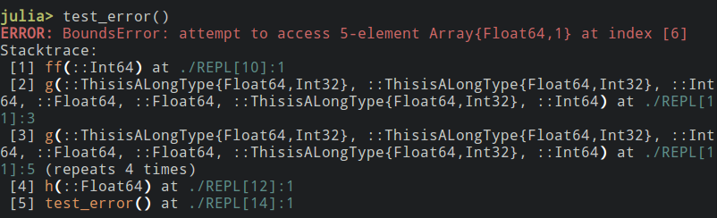

Upgrades to the REPL in Julia 0.6
Since version 0.3, Julia has come with a command-line interface — a REPL — that is completely written in Julia (PR #6270). Among other features, the REPL provides code completion, history with reverse search, and a rich set of customizable key bindings. (See the Interacting with Julia part of the manual for the REPL documentation.) Even so, the REPL in Julia 0.6 includes quite a few new visual tweaks and features. In this blog post, we look into some of these changes and customizations to the Julia REPL, available in 0.6.
Prompt pasting
It is quite common (as in the Julia manual and in subsequent code blocks of this blog post) to write snippets of Julia code like they were copied straight from a REPL session, for example:
julia> f() = rand(10^6)
f (generic function with 1 method)
julia> @time f();
0.052948 seconds (25.05 k allocations: 8.769 MiB)If you wanted to try out this code in 0.5, you would typically copy the code into a text editor, remove the julia> prompt, remove the output, and then finally have code that looked like:
f() = rand(10^6);
@time f();which could then be pasted back into the REPL to be executed.
In 0.6, the REPL comes with a feature called prompt pasting by which a pasted expression starting with julia> automatically has prompts and eventual output scrubbed before being executed.
If you have a 0.6 REPL currently at hand, you can try to copy and paste the example with the prompt and output above directly into the REPL and you will see that it works in exactly the same way as if we had manually removed them.
Unfortunately, for technical reasons (no support for bracket pasting), this feature does not work in the standard cmd-terminal on Windows. There are, however, multiple alternative terminal emulators on Windows that do support this, e.g. Console2 or Cygwin.
Printing of stack traces
When an error occurs, the REPL prints the exception that was thrown along with a stack trace: a list tracing back through the sequence of function calls and source code lines that were being executed when the error occurred. In previous versions of Julia, the stack trace might omit some function calls that were inlined, making it harder to understand. In Julia 0.6, the stack trace includes function calls that were inlined. Unfortunately, in combination with the Julia idiom of breaking complex tasks into many smaller functions, this can sometimes lead to long stack traces. Furthermore, the stack trace includes the type signature of the methods being called, but these type signatures can sometimes be quite verbose (e.g. for union types or types taking many parameters). Julia 0.6 greatly improves the readability of this output by coloration, numbering, and interactive features described below.
In earlier Julia versions, stack traces were printed without much structure. Everything was printed in bold red which made it a bit difficult to find the information one was looking for. As an example, here is a screenshot from an error thrown on 0.5:

Finding the relevant information can be quite difficult, especially the file name and line numbers since they are not aligned in any way. In 0.6, this is what is currently shown for the same error:

Stack trace presentation has improved significantly: Stack traces no longer print in red, while associated error messages continue to print in red.
Stack traces also no longer print entirely in bold; only function names and line information now appear in bold.
These changes visually separate the most frequently sought information (the associated error message, function names and line information) from the surrounding text, making that information much easier to pick out.
Additionally, each stack frame in the stack trace prints numbered, making individual stack frames easier to refer to.
(Apart from these changes to stack trace presentation, BoundsErrors no longer display with the associated collection’s contents, decreasing visual noise.)
Furthermore, you can now customize stack frame function and line information print colors by setting the environment variables JULIA_STACKFRAME_FUNCTION_COLOR and JULIA_STACKFRAME_LINEINFO_COLOR respectively.
For example, setting
julia> ENV["JULIA_STACKFRAME_LINEINFO_COLOR"] = :cyan;
julia> ENV["JULIA_STACKFRAME_FUNCTION_COLOR"] = :yellow;and rerunning the example above yields

In addition to the visual changes to the stack trace, there is also a new interactive feature, possible now that we can refer to stack frames by number.
After a stack trace has been printed, you can simply enter the number of one of the stack frames in the REPL, press CTRL + Q and the file will be opened in
an editor at the line number corresponding to that stack frame.
To set the editor, use the environment variable EDITOR, for example ENV["EDITOR"] = "subl" for the Sublime Text editor.
This can be used when you quickly want to fix a typo or just to jump around with the editor in the call stack leading up to the error.
Note that it is currently not possible to open the location of a stack frame that refers to code directly evaluated in the REPL.
More colors
While not strictly related to the REPL, it is still within the scope of this post to describe some of the changes made to the color printing functionalities in Julia 0.6.
Previously, it was only possible to use 8 colors for printing (see help?> Base.text_colors) by using the function print_with_color.
In 0.6, light versions of these colors (prefixed by light_) are also supported, increasing the number of named colors to 16.
In addition, an integer between 0 and 255 can now be used as a color (see this chart for a reference).
These new colors are possible to use wherever an option previously existed to change the color of some element in the REPL.
Another change is that, by default, the function print_with_color no longer prints in bold; instead a new keyword argument bold::Bool was introduced that controls this.
{kind=link}
Some examples of this functionality are given in the figure below:

Default style of input/output text
Previously, the default style of entered code and shown objects in the REPL was bold; this was changed in 0.6 to instead use standard “light” text. However, as the example below shows, it is possible to change this back to bold, or to any other color:

Taking REPL-customization even further
If you would like to take REPL customization even further, I would encourage you to take a look at the OhMyREPL package (author of this post is also author of that package).
Some of the features described in this post were upstreamed to Base Julia from that package, but for now, some of the more advanced features, like syntax highlighting, matching bracket highlighting and customization of input/output prompts, still live only in the OhMyREPL package.
Acknowledgments
Thanks to Sacha Verweij, Steven G. Johnson, Tony Kelman and Alex Arslan for valuable comments and suggestions.